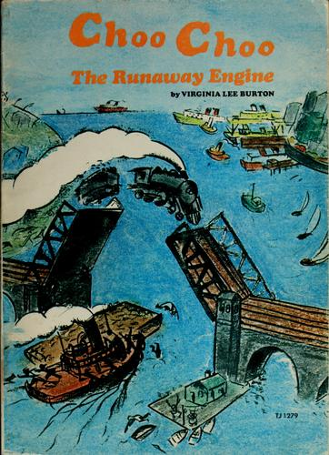

Choo Choo, the Runaway Engine

Details
My notes
Choo Choo, the runaway engine.
About
Virginia Lee Burton’s picture book follows a little locomotive that sets off without her coaches. It is also published as Choo Choo: The Story of a Little Engine Who Ran Away.
Identification
The book memory is recorded. Particular editions, reading years, and personal scenes are not recorded yet.